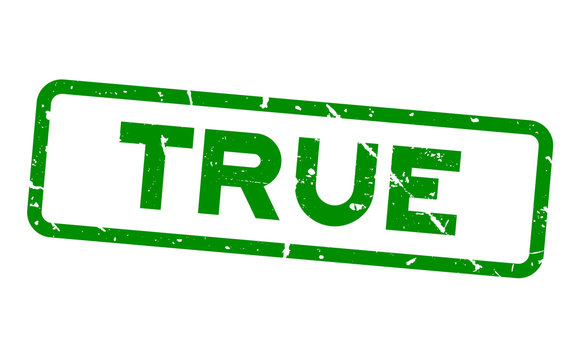

Galeria
El proceso se puso en marcha y ya en mayo de 1966 se tuvieron los primeros planos arquitectónicos, que desde
entonces
sugerían la canalización de la quebrada de la Iglesia. Para octubre del mismo año ya se había adjudicado el contrato
para los estudios y los cálculos estructurales, asignados a Pedro García Arenas por un valor de $ 6.930. De igual
manera
se necesitaban los estudios hidráulicos que permitieran la canalización de aguas lluvias, la canalización de
corrientes
y las instalaciones sanitarias, que se le asignaron a Jorge Alberto Chacón y ejecutada por Jorge Chávez.
Todo iba muy rápido, tanto, que hasta se propuso la primera planta de personal, integrada básicamente por un
director de
centro, un instructor de moldeo y fundición y otro de modelería, lo mismo que una mecanotaquígrafa y un celador.
Hechos los procesos necesarios, conocidos los planos topográficos con el correspondiente guiño de la Dirección
Nacional
del SENA, se hace el proceso de adjudicación, siendo entregada la obra para su construcción a la firma Martínez
Villalba
& Cía., cuya propuesta era la más ajustada a los promedios definitivos y se anuncia la llegada desde Inglaterra de
una
remesa con maquinaria y equipos de dotación. (Acta 218, 16 de mayo de 1967).
